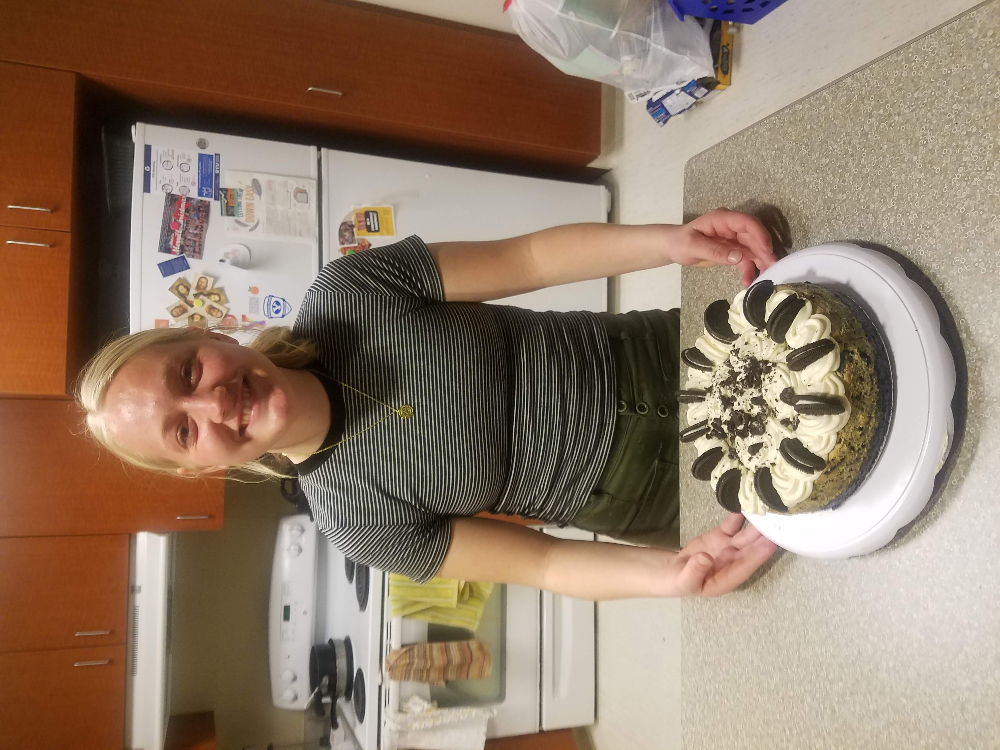
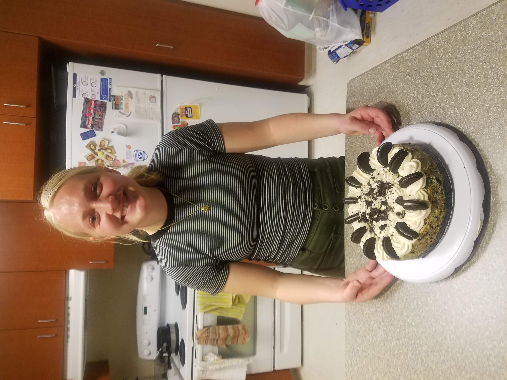

Tableau Dashboard


I come from a loving, supportive family of 7, with two sisters and two brothers. I grew up in Heber City, Utah and I am currently attending BYU, studying accounting. I served a mission for the Church of Jesus Christ of Latter-Day Saints in McAllen, Texas. That place will always have a special place in my heart.
Below are explanations of what I do with my free time!

Since I could walk, my parents were constantly taking me and my sisters and brothers outside on little adventures. I loved going on hikes with my family and to work hard to see a beautiful view! Pictured below are a few of my favorite hikes/pictures of adventures I have been on recently!!

I played basketball competitively from 5th grade to 12th grade. I was constantly playing basketball and working on my defense and offensive game. I played shooting gaurd throughout all of high school. I made close friends with my teammates and I learned a lot about teamwork, work ethic, and hardwork. I continue playing basketball for fun at BYU for intramurals and for fun with my family and friends with pick-up games.


I love cooking for other people!!! Here are some of my favorite things to make:
 
